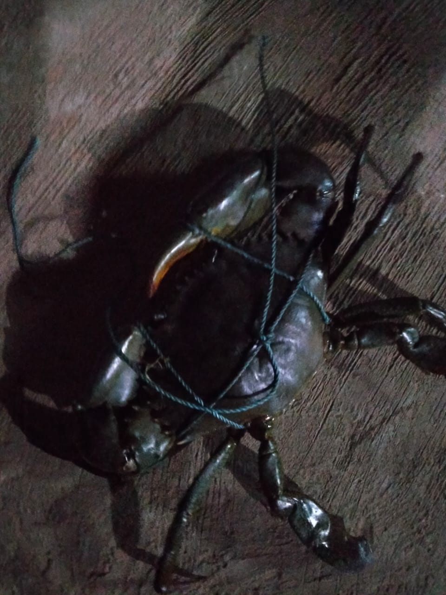
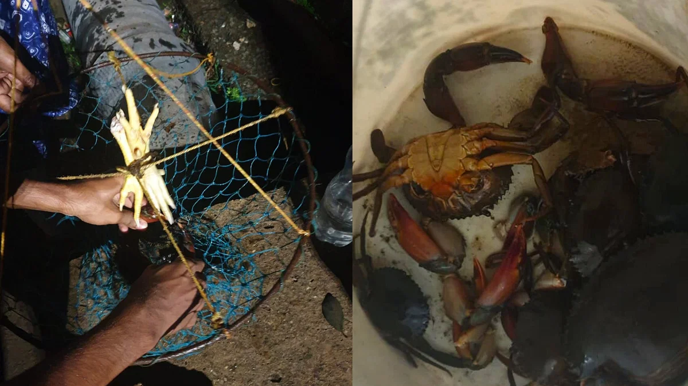
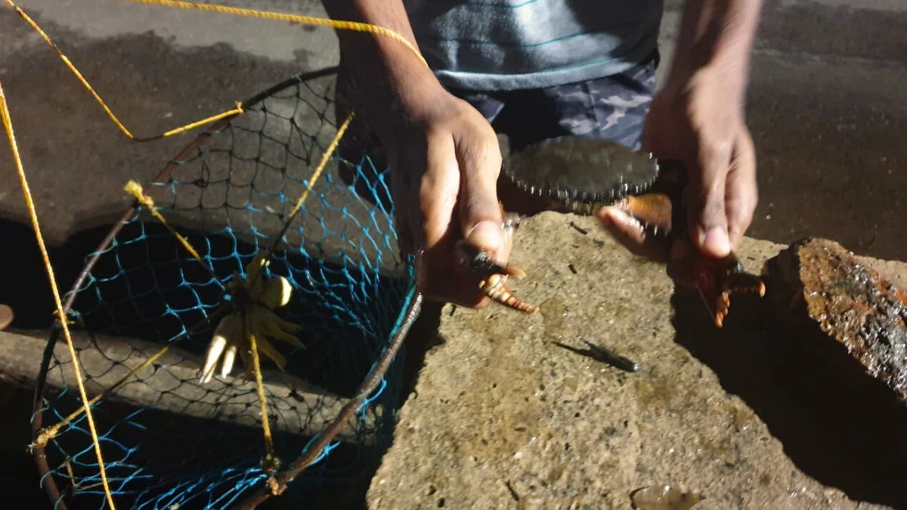
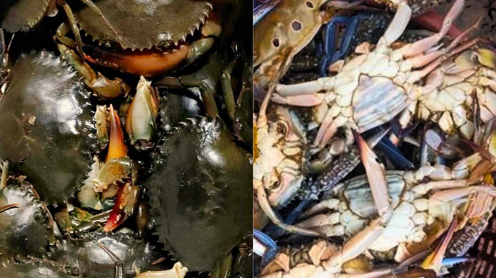

It is no secret that the tiny state of Goa has extensive shores and inland water bodies that allow a lot of fishing activity. Praying for safety and a great catch, the Goan fishermen set out with their boats at nightfall, only to return at dawn with their nets full of seafood like mackerel, catfish, sharks, shrimps and crabs.
Fishing isn’t confined to the fishermen’s community that lives off it. Every Goan has made at least one attempt at fishing (if we are counting even the unsuccessful ones) as a leisure activity. And, catching crabs is something that is done in a unique way in Goa.
We would often wake up to Dad looking for that one bag that the koblems/ kubulim (crab traps) were tucked in the previous year. It was only once the entire family volunteered to help look for it, that it would be discovered lying in some corner of the house.
Prepping for the trip to catch crabs would always begin with tending to the last-minute mending of these crab traps. These homemade crab traps have a circular metal ring with a diagonal rod running across in diameter and a loose hanging net attached to one side of the ring.
In the meantime, Mum would prepare a bag of bait, which usually consisted of chicken feet, intestines or even smaller fish. The kids would dress up for the occasion with matching T-shirts, shorts and caps.
With the koblems, a spare sack/bucket, bait, pocket knife and some munchies, we’d head to the nearest riverbank, backwaters or brackish waters that are known to be the ultimate breeding grounds for crabs.
Bait was then secured to the traps meticulously, and each koblem was then dropped into the river amidst the mangroves, with one loose end (that usually had a Thermocol piece or fishing float ball attached) left on the road to retrieve the trap.
Now, it was the test of patience. To keep the kids occupied, snacks like potato chips, beef patties and chutney sandwiches were handed over. The grown-ups drank chilled beers, while the kids relished soft drinks to help beat the scorching heat.
After regular intervals, each trap was removed and checked – either a crab was caught in the net or the bait went missing. If a crab appeared, everyone would exult and celebrate.
This was followed by absolute silence as the crab was detangled from the net. Since a crab’s defensive claws can cause painful injuries, especially if it has a strong grip, a skilled person was required to release the crab.
This person would find a way to pressurize the crab's shell, after which both the claws were carefully twisted and detached. This was then put into the spare sack that was opened and closed as quickly as possible so that no crab could get away. Then, the process was repeated and bait was tied to the koblem and tossed into the water.
There are usually two types of crabs found in Goa. The first type is found in the rivers and is locally known as kurle or rock crabs. They are black and have a hard shell. The second type is the sea crabs, which are locally known as jhali/jhale, and are comparatively fleshier than the river crabs. Apart from the koblem, crabs are also caught using nets and fishing rods.
As clueless kids, we were told how tides affected the catch and that the best time to catch crabs was during the slack tide (a short time when water is the calmest, which occurs right before the reverse of the tidal directions).
Also, a fun fact that the elders shared was that these ten-legged creatures would help lower cholesterol levels and were threatened by the plastic polluting their habitats and the increased water traffic.
As it got closer to noon, the sack full of fresh kurlios was taken home and cleaned. And, the most delicious crab curry was prepared, using spices and masalas, for the entire family to feast on.
Other popular crab items that are relished even today with the same appreciation, include crab xacuti, crab xec-xec and stuffed crab. In fact, crab as seafood is a big hit with tourists and is a highly-priced item on the restaurant menus in Goa.
Back in the day, phones and cable television were a rarity and spending so much of our time outdoors catching crabs was a sort of entertainment in its own way.
Today our busy schedules don’t allow us to make many trips, but memories have managed to have the same grip on our hearts as the crabs’ claws, remaining as fresh as the crabs that would once scuttle away from under our feet while strolling on the beach.